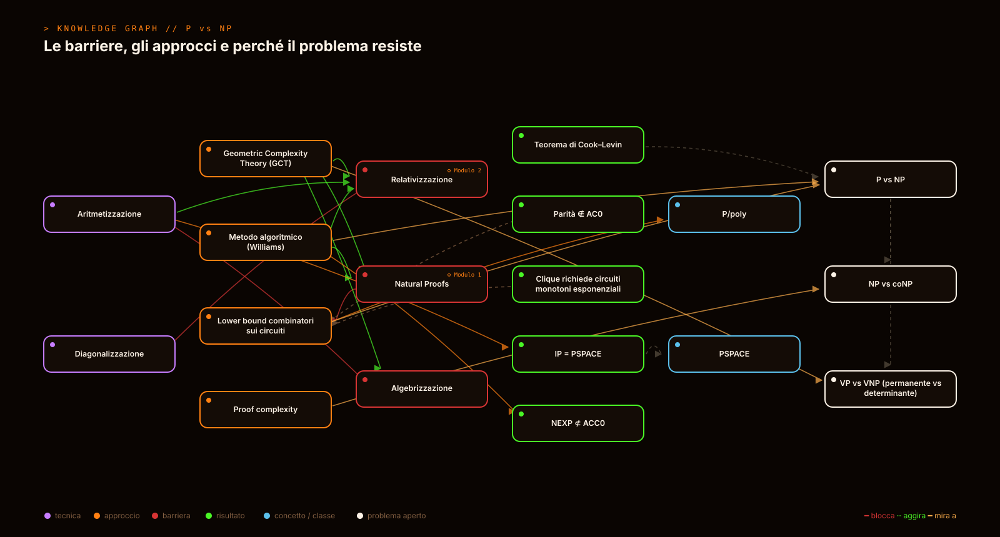
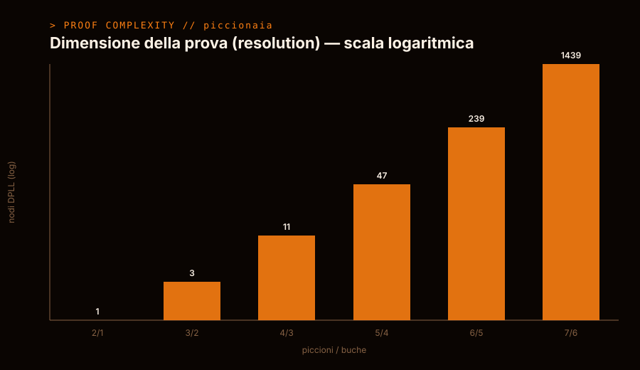
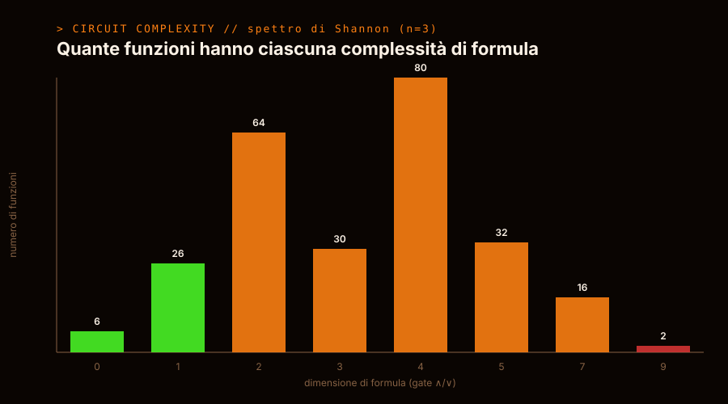
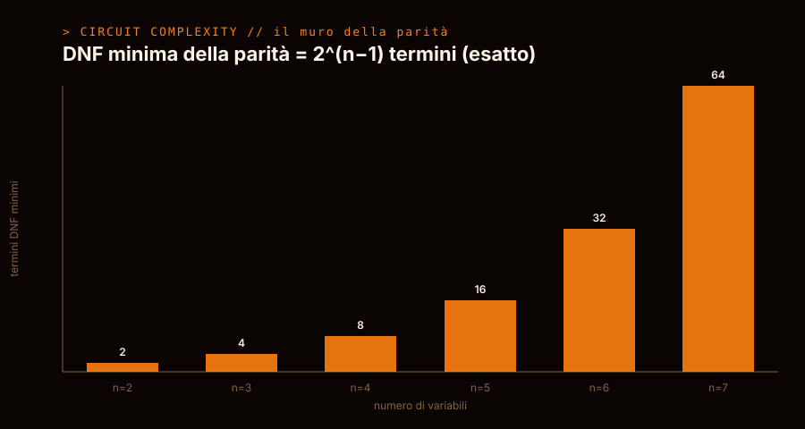

// IL BUG PIÙ COSTOSO DELL'INFORMATICA TEORICA
Trovare una soluzione è davvero
più difficile che verificarla?
Sembra una domanda ovvia. È aperta da oltre cinquant'anni, vale un milione di dollari, e sappiamo persino perché tutte le strade ovvie falliscono. Qui la smontiamo pezzo per pezzo — e la rendiamo eseguibile.
È tutta qui la domanda. E la differenza fra le due cose è il confine fra ciò che un computer può fare in fretta e ciò che, forse, non potrà mai.
Immagina un sudoku enorme. Se qualcuno ti dà una griglia già compilata, controllare se è corretta è banale: scorri righe, colonne e quadrati. Velocissimo.
Ma trovare la soluzione da zero, su una griglia gigante, può richiedere un tempo che esplode con la dimensione. Provare tutte le combinazioni diventa rapidamente impossibile anche per il computer più potente.
P è la classe dei problemi che sappiamo risolvere in fretta. NP è quella dei problemi di cui sappiamo almeno verificare in fretta una soluzione proposta.
La domanda da un milione di dollari: ogni problema facile da verificare è anche facile da risolvere? Cioè P = NP? Quasi tutti scommettono di no — ma nessuno è riuscito a dimostrarlo.
Risolvere in tempo polinomiale. La soluzione si costruisce rapidamente. Es. ordinare una lista, trovare il percorso più breve.
Verificare in tempo polinomiale una soluzione data. Trovarla potrebbe essere durissimo. Es. sudoku, incastro di orari, sacco dello zaino.
La cosa straordinaria non è solo che il problema sia aperto. È che abbiamo dimostrato perché gli approcci più ovvi non possono funzionare. Una vera dimostrazione deve scavalcare tutte e tre queste muraglie insieme.
Non un programma che "trova la dimostrazione" — quello nessuno sa farlo. Ma un toolkit che trasforma le barriere da concetti astratti in codice eseguibile e verificabile: dato un tentativo, ti dice se cade in una trappola nota — e ti mostra anche dove i lower bound funzionano davvero.
sorry, zero assiomi.




Niente promesse: numeri e fatti. Tutto gira, tutto è testato, e la parte matematica è verificata dal kernel di un proof assistant.
Un modulo alla volta, ognuno eseguibile e testato da solo. Prima le barriere (perché le strade falliscono), poi i lower bound che funzionano. Sotto: la timeline completa, in chiaro.
sorry, zero assiomi.Nessuno sa come dimostrare P ≠ NP — e abbiamo visto perché le strade ovvie sono sbarrate. Un programma che "trova la dimostrazione" con la tecnologia attuale non esiste, e prometterlo sarebbe disonesto.
Quello che esiste è uno strumento di ricerca e divulgazione vero: prende le barriere che bloccano il problema e le rende eseguibili, verificabili e spiegabili. Trasforma "è difficile, fidati" in "guarda, gira: ecco perché la tua idea cade nella trappola".
È così che si smonta un sistema complesso: non promettendo il colpo di genio, ma capendo con precisione dove sono i muri — e perché.